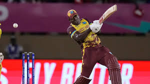
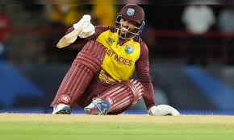
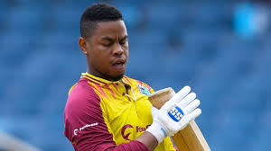
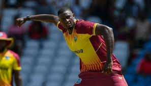

West Indies T20I Team
2012 & 2016 T20 World Cup champions with explosive batting.
About West Indies T20I Team
Country: West Indies
Home Ground: Various (e.g., Kensington Oval, Barbados)
Captain: Rovman Powell
Coach: Daren Sammy
The West Indies T20I team is renowned for its power-hitting and flair, winning T20 World Cups in 2012 and 2016.
westindies Players

Rovman Powell (C)
Captain, power-hitting batsman.
Nicholas Pooran
Wicketkeeper-batsman, power-hitter.

Brandon King
Opener, consistent scorer.

Shimron Hetmyer
Batsman, dynamic finisher.

Andre Russell
All-rounder, explosive.

Jason Holder
All-rounder, pace bowler.
Shai Hope
Batsman, reliable anchor.

Alzarri Joseph
Bowler, pace spearhead.

Akeal Hosein
Spinner, economical.

Romario Shepherd
All-rounder, medium-pacer.
Obed McCoy
Bowler, left-arm pacer.